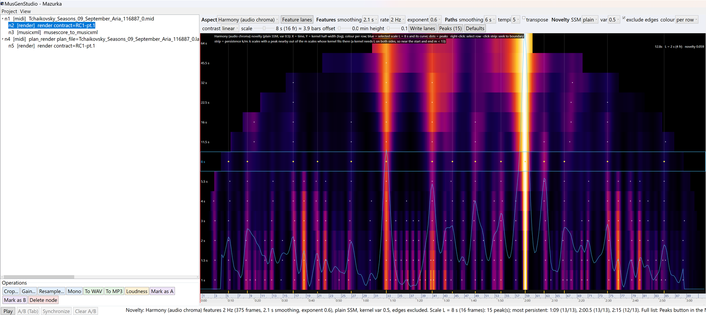
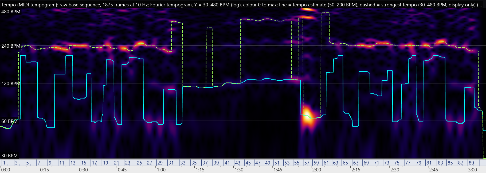
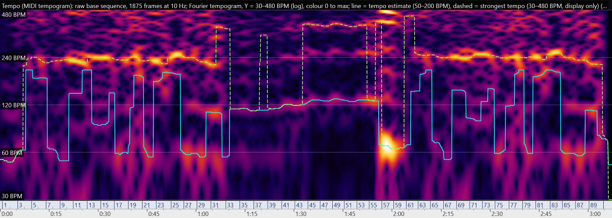

The window and the mouse
A project is a tree of files. You pick one, and everything in the middle of the window shows that one piece on one time axis.

12345678- Project tree. Each line is a node: a file, and the operation that made it. Here n2 is an audio render of the MIDI n1; n5 is a render of the plan n4. Nothing you do changes a parent node.
- Operations for the selected node. They depend on its kind.
- Levers of the open structure view. The Aspect box at the left decides what the view looks at.
- The view. Time always runs left to right.
- Ruler. Blue numbers are bars (only when a plan or labels file gives bar times); grey numbers are minutes and seconds.
- Status line. What the view computed, with its settings. Hover for the full text.
- Play, A/B, Synchronize. Space plays and pauses.
- View menu. Every view with its key; the open one is ticked.
Keys
| S C | Spectrogram, chromagram |
| R M T N | Raw aspect, self-similarity matrix, scape plot, novelty: all four follow the Aspect box |
| K | Aspect stack: all aspects at once |
| P | Plan lane on or off |
| Space | Play or pause |
| Tab, A, B | In A/B: switch between the pieces at the same moment |
Press a view's key again to go back to the waveform.
Mouse
| Wheel | Scroll in time |
| Ctrl + wheel | Zoom in time, around the mouse |
| Click | Move the playback cursor there (in every view, and on the ruler) |
| Hover | Exact values under the mouse |
| Right-drag in the matrix (M) | Select a segment |
| Shift + click in the matrix | Jump to the time of the row instead of the column |
| Right-click in the scape plot (T) | Select the segment under the mouse |
| Shift + click in the scape plot | Jump to the start of that segment |
| Right-click in novelty (N) | Select that scale (row) |
| Click in novelty's bottom strip | Jump to the boundary |
| Click an aspect's name in the stack (K) | Select that aspect; click again for its raw view |
| Double-click a pane's splitter | Collapse or restore the tree or the details panel |
Things every view shares
| Looks like | What it is | How to read and use it |
|---|---|---|
| Red vertical line | The playback cursor. It runs through every view, the lanes and the ruler at the same moment. | |
| Black, purple, red, yellow, white | The heat scale of the spectrogram, chromagram, matrix, scape plot, novelty and most raw views: black is the least, white the most. Each view says in its legend line what the least and the most are. | |
| Plain dark grey | No data: past the end of the piece, or a segment that does not fit inside it. | |
| Grey part of the ruler | Past the end of the piece. |
Contrast
A single bright spot can push everything else into the dark. The contrast box offers linear and √ (novelty also log). √ and log lift the weak values. Only the colours change; every number, threshold and peak stays the same. Compare the same tempogram, linear and √:


Text size
View, Settings, Views, Text size offers Normal, Large and Extra large.
Read more
- M. Müller, Fundamentals of Music Processing, 2nd ed., Springer 2021 (the book behind most of these views)
- The FMP notebooks: the book's free companion, with code, pictures and sound